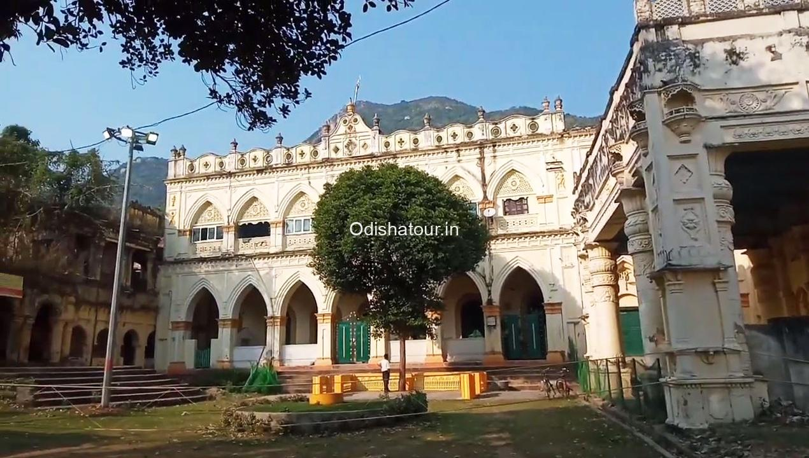
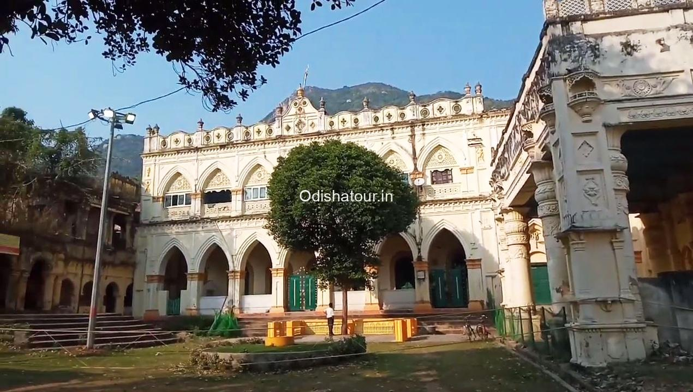

According to local traditions, Nilgiri state was founded by a mythical ancestor coming from the Chhota Nagpur region of the Nagabanshi dynasty. In 1525 Raja Narayan Singh distinguished himself by his service to Emperor Akbar in the battles against Afghan invaders. Between 1611 and 1797 there were seven successive rulers. During the rule of Raja Krishnachandra Mardraj Harichandan in 1850s, he adopted the son of the Bhanj king of Mayurbhanj, Krishna Chandra Bhanj Deo, who succeeded as the ruler of Nilgiri as Raja Shyamchandra Mardraj Harichandan in 1893.
During the time of the political integration of India freedom fighters such as Balaram Raj, Shyamsundar Parida, Kailashchandra Mohanty, Banamali Das, Baishnab Patnaik and Nanda Kishore Patnaik forced the last Raja of Nilgiri to surrender to the newly formed Indian National Government. The prince signed the accession to the Indian Union on 1 January 1948.[3]
 
